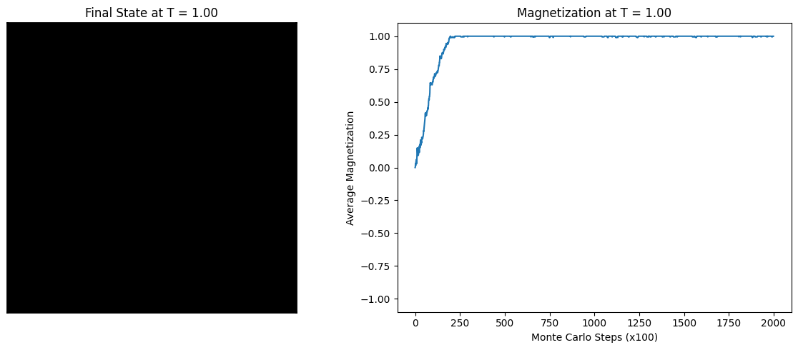

Pada simulasi ini, sistem dikondisikan pada temperatur rendah yaitu T = 1.0. Nilai temperatur ini berada jauh di bawah nilai ambang batas kritis teoritis sistem Ising 2 Dimensi (Temperatur Kritis Onsager, Tc sekitar 2.269). Berdasarkan prinsip mekanika statistik, jika parameter temperatur bernilai kecil, maka usikan atau fluktuasi termal acak (kBT) tidak memiliki energi yang cukup untuk melawan gaya kopling pertukaran simetris antar-spin tetangga (J).
Sistem cenderung meminimalkan nilai energi internalnya dengan cara menyelaraskan arah dipol magnetik lokal secara kolektif. Akibat kuatnya interaksi tatanan jarak jauh (long-range order) ini, material uji komputasi akan masuk dan menetap ke dalam Fase Feromagnetik, di mana seluruh domain magnetik mengunci orientasinya ke satu arah yang seragam.
Melalui penurunan analitik eksak Onsager, kita dapat merumuskan parameter makroskopis sistem pada kondisi setimbang (M) tanpa intervensi medan magnet luar (B = 0) sebagai berikut:
Ketika nilai T = 1.0 dimasukkan ke dalam persamaan di atas, nilai pecahan di dalam kurung mendekati nilai nol, yang menghasilkan nilai mutlak rata-rata magnetisasi per spin mendekati angka sempurna, yaitu |M| mendekati 1.
Simulasi ini diwujudkan lewat algoritma stokastik Markov Chain Monte Carlo (MCMC) berlandaskan kriteria penerimaan Metropolis. Sistem menggunakan parameter kisi berukuran 20 x 20 (total 400 titik spin) dengan menerapkan aturan Kondisi Batas Periodik (Periodic Boundary Conditions) berbasis fungsi matematika modulo untuk mengeliminasi efek distorsi pada area batas tepi sistem.
Fitur utama dalam skrip ini adalah penggunaan metode Hot Start Initialization, di mana orientasi awal seluruh spin diacak secara acak seimbang antara -1 dan +1. Kondisi awal ini merepresentasikan sistem dengan nilai entropi maksimum (keadaan acak total). Sistem kemudian dipaksa berevolusi sejauh 200.000 langkah komputasi untuk mencapai kestabilan termal.
import numpy as np
import matplotlib.pyplot as plt
# ==========================================
# 1. PARAMETER SISTEM
# ==========================================
N = 20 # Ukuran kisi 20x20
MCS = 200000 # Total langkah Monte Carlo
T = 1.0 # SUHU SISTEM
# Inisialisasi Hot Start (Spin acak -1 atau 1)
grid = np.random.choice([-1, 1], size=(N, N))
mag_history = [] # Array nilai magnetisasi
# ==========================================
# 2. ALGORITMA METROPOLIS
# ==========================================
for step in range(MCS):
i = np.random.randint(0, N)
j = np.random.randint(0, N)
s = grid[i, j]
# Kondisi Batas Periodik (Modulo %N)
tetangga = grid[(i+1)%N, j] + grid[(i-1)%N, j] + grid[i, (j+1)%N] + grid[i, (j-1)%N]
delta_E = 2 * s * tetangga
# Kriteria penerimaan Metropolis
if delta_E < 0:
s *= -1
elif np.random.rand() < np.exp(-delta_E / T):
s *= -1
grid[i, j] = s
# Catat rata-rata magnetisasi setiap 100 langkah
if step % 100 == 0:
mag_history.append(np.sum(grid) / (N**2))
# ==========================================
# 3. VISUALISASI HASIL
# ==========================================
fig, axes = plt.subplots(1, 2, figsize=(12, 5))
# Plot 1: Keadaan Akhir Kisi
axes[0].imshow(grid, cmap='binary', vmin=-1, vmax=1)
axes[0].set_title(f"Final State at T = {T:.2f}")
axes[0].set_xticks([])
axes[0].set_yticks([])
for spine in axes[0].spines.values():
spine.set_edgecolor('black')
spine.set_linewidth(2)
# Plot 2: Riwayat Magnetisasi
axes[1].plot(range(len(mag_history)), mag_history, color='tab:blue', linewidth=1.5)
axes[1].set_title(f"Magnetization at T = {T:.2f}")
axes[1].set_xlabel("Monte Carlo Steps (x100)")
axes[1].set_ylabel("Average Magnetization")
axes[1].set_ylim(-1.1, 1.1)
plt.tight_layout()
plt.show()

Penggunaan skenario Hot Start (kondisi awal acak) memberikan gambaran proses fisis yang sangat menarik pada grafik keluaran. Pada awal iterasi (Monte Carlo Step rendah), nilai rata-rata magnetisasi sistem bernilai fluktuatif di sekitar angka 0.0. Hal ini disebabkan karena jumlah spin bernilai +1 dan -1 masih seimbang, saling meniadakan momen magnetik satu sama lain secara makroskopis.
Namun, seiring berjalannya iterasi komputasi, kurva riwayat magnetisasi akan memperlihatkan lonjakan tajam (eksponensial) menjauh dari angka nol menuju garis asimtot plateau di nilai +1.0 atau -1.0. Fenomena transisi dinamis ini membuktikan secara nyata terjadinya peristiwa Patahan Simetri Spontan (Spontaneous Symmetry Breaking). Walau peluang probabilitas arah atas dan bawah sama besar, sistem dipaksa memilih salah satu kutub fasa akibat interaksi penurunan energi yang konvergen pada suhu rendah.
Pada visualisasi final keadaan matriks grid (Final State), permukaan kisi akan tampak bersih didominasi oleh satu warna solid utuh (hitam penuh atau putih penuh). Ketiadaan gugusan pulau spin minoritas mengonfirmasi bahwa pada temperatur T = 1.0, material komputasi berhasil mempertahankan fase feromagnetik murni secara kohesif, kokoh, dan bebas dari amorfisasi termal.